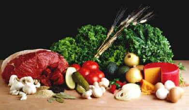
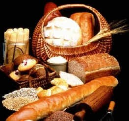
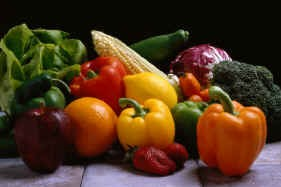
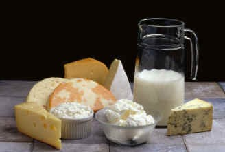
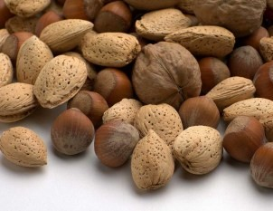

The five main food groups are:
Posted on March 1, 2020 at 12:00 PM

There are five main food groups that we need to eat food from every day to stay healthy. Food is the fuel for our body and we need the fuel for energy, to help our body grow and repair itself, and to keep warm.
Grain: This is the food group that we should eat most often. It includes healthy foods like cereal, rice and pasta. We should eat between six and eleven from this group every day. Bread products provide us with carbohydrates which give us energy.
Fruits and Vegetables: Fruits and vegetables give us fiber and important vitamins and minerals. We should eat at least three servings of fruit and three to five servings of vegetables every day. Because they are low in fat and calories, fruits and vegetables are a healthy snack between meals.
Meat and Protein: We should eat two to three servings a day of the foods in this group. This food group includes poultry, fish, meat, dry beans, eggs and nuts. The foods from this group give us proteins, iron and zinc.
Oils and Sweets: Fats, oils and sweets provide hardly any nutrition for the body so we should eat very little from this food group.
fiber: Fiber is very important in our diet because it helps to move food through the stomach, helping to prevent constipation. Everybody needs some fiber in their diet.

food groups: It is generally thought that there are five main food groups.
However, sometimes fruits and vegetables are classified as two separate groups, making six groups in total. This healthy food pyramid shows these six food groups.
iron and zinc: Iron and zinc are minerals. We need minerals for the growth and care of our bodies.
milk food group: This food group includes foods like cheese and yoghurt as well as milk. One serving of this food group could be one cup of milk or yoghurt or 1 1/2 ounces of cheese.
nutrition: To give our bodies nutrition, a food must contain vitamins, carbohydrates, proteins or minerals. A lot of food from the fats, sweets and oils food group, such as butter, margarine, gravy, salad dressing, sugar and jelly do not contain these things.
protein: Protein gives us energy, but they also serve as one of the main building blocks of the body. Muscle, skin, cartilage and hair are all made up mostly of proteins.
vitamins and minerals: Vitamins and minerals keep us healthy. They are known as nutrients. We get vitamins and minerals from the foods we eat. Two important vitamins are Vitamin C, which we get from fruits such as oranges and Vitamin B, which we get from the meat and bread groups. Minerals such as calcium keep our bones healthy. Calcium is found in many milk and dairy products.